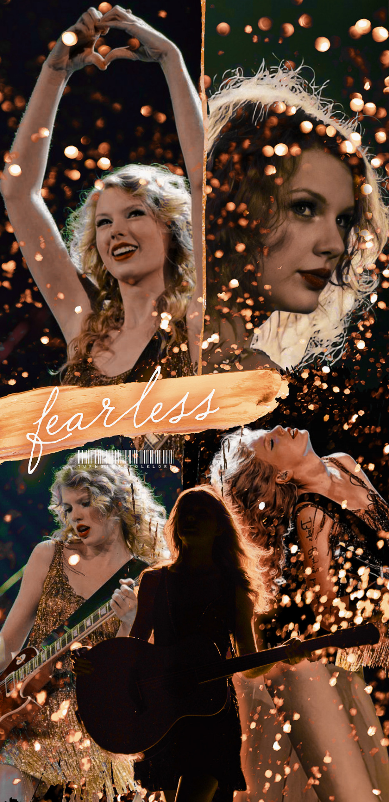

Fearless
Reproducir en Spotify
Fearless (Taylor's Version) es el primer álbum de estudio regrabado de la cantante y compositora estadounidense Taylor Swift, lanzado a través de Republic Records el 9 de abril de 2021. Es una regrabación del segundo álbum de estudio de Swift, Fearless, y el primero de los seis álbumes que Swift planea regrabar, luego de la disputa sobre la propiedad de sus primeros seis álbumes de estudio.
Grabado con voces más nuevas, Fearless (Taylor's Version) consta de las 19 pistas de la edición platino del segundo álbum de estudio de Swift, Fearless, su sencillo de 2010 «Today Was a Fairytale» y seis adicionales «From the Vault», canciones que no se incluyeron en el álbum de 2008. Fearless (Taylor's Version) replica la instrumentación de la grabación de 2008, producida por Swift y Christopher Rowe; Jack Antonoff y Aaron Dessner coprodujeron las pistas «From the Vault» con Swift.
